Active Directory Attack Detection & Investigation
Project Overview
This project demonstrates the detection and investigation of suspicious Active Directory activity within the MaryShield Cyber Lab. The case study focuses on Windows authentication events, account activity, group changes, PowerShell execution, endpoint telemetry, and network evidence.
Security events are correlated across Windows Server 2022, Splunk Enterprise, Wazuh XDR, Security Onion, pfSense, and Sysmon to reproduce a realistic SOC analyst investigation workflow.
All simulated activity documented in this project was performed only within the isolated and authorized MaryShield Cyber Lab environment.
Enterprise Active Directory Detection Architecture
The architecture below shows how Active Directory authentication, endpoint events, firewall activity, and network telemetry are collected and correlated across the security monitoring stack.
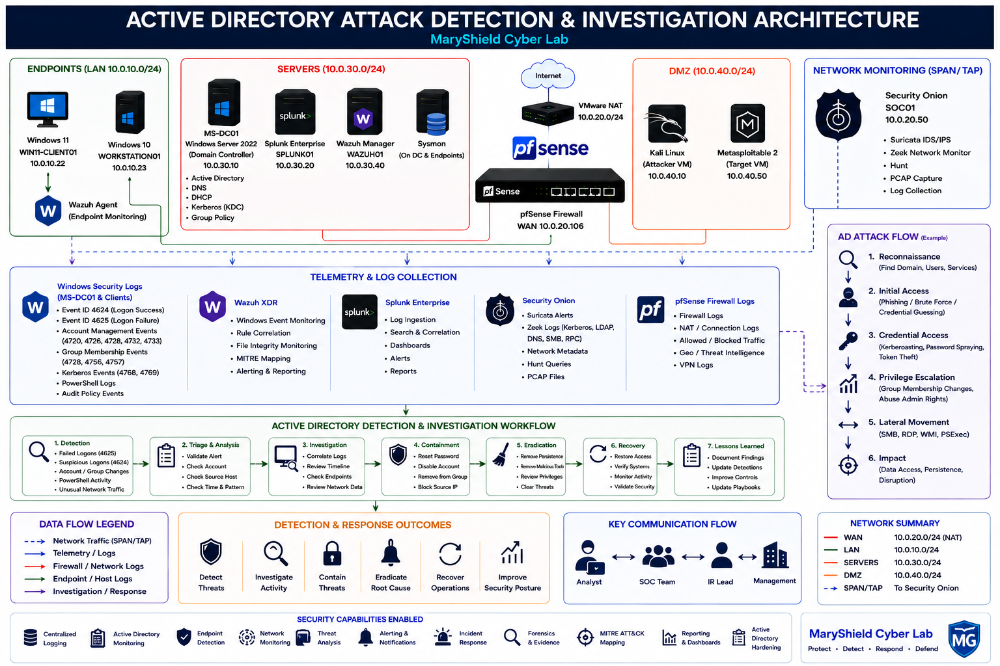
Active Directory Security Overview
Active Directory provides centralized identity, authentication, authorization, and policy management. Because of its central role, authentication and account-management telemetry are important sources for detecting suspicious behavior.
Authentication
Kerberos and NTLM authentication events provide visibility into user and service access.
Account Management
User creation, deletion, password changes, and account modifications can indicate administrative or suspicious activity.
Group Membership
Changes to privileged groups may indicate privilege escalation or administrative misuse.
PowerShell
PowerShell activity can provide valuable evidence during endpoint and administrative investigations.
Lab Environment
| System | Role | IP Address |
|---|---|---|
| MS-DC01 | Windows Server 2022 / Active Directory / DNS | 10.0.30.10 |
| WIN11-CLIENT01 | Domain-joined Windows workstation | 10.0.20.22 |
| Kali Linux | Authorized security testing workstation | 10.0.40.10 |
| Splunk Enterprise | SIEM and centralized log analysis | 10.0.30.20 |
| Wazuh XDR | Endpoint monitoring and security analytics | 10.0.30.40 |
| Security Onion | Network security monitoring | 10.0.20.50 |
Normal Authentication Baseline
Before generating test activity, normal domain authentication behavior was reviewed to establish a baseline for comparison.
Baseline Activities
- Normal domain user logon.
- Successful Windows authentication.
- Kerberos ticket activity.
- Normal domain-controller communication.
- Typical PowerShell administrative activity.
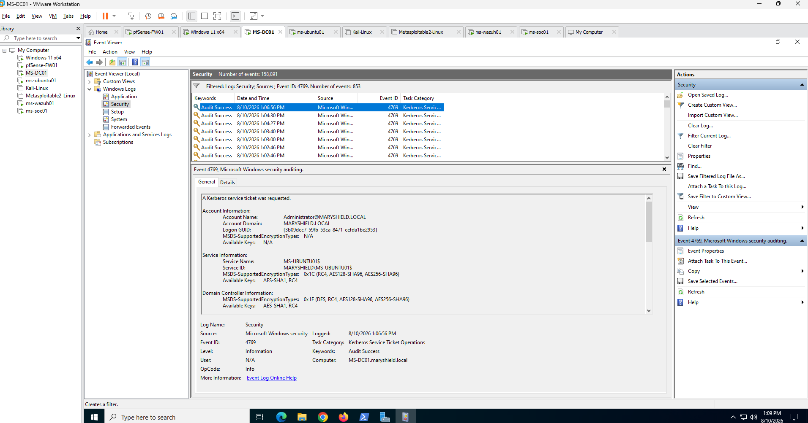
Controlled Security Simulation
Controlled security tests were performed inside the isolated lab to generate realistic Windows and Active Directory telemetry for detection and investigation.
The objective was to validate monitoring coverage rather than to demonstrate unrestricted offensive activity.
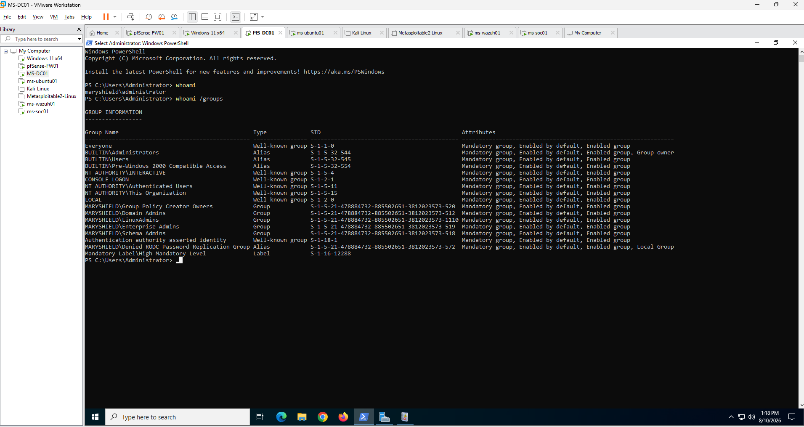
Failed Logon Detection — Event ID 4625
Windows Security Event ID 4625 records failed account logon attempts and provides valuable evidence when investigating authentication failures, password guessing, or account misuse.
Key Fields Reviewed
- Account Name
- Logon Type
- Source Address
- Failure Reason
- Workstation Name
- Timestamp
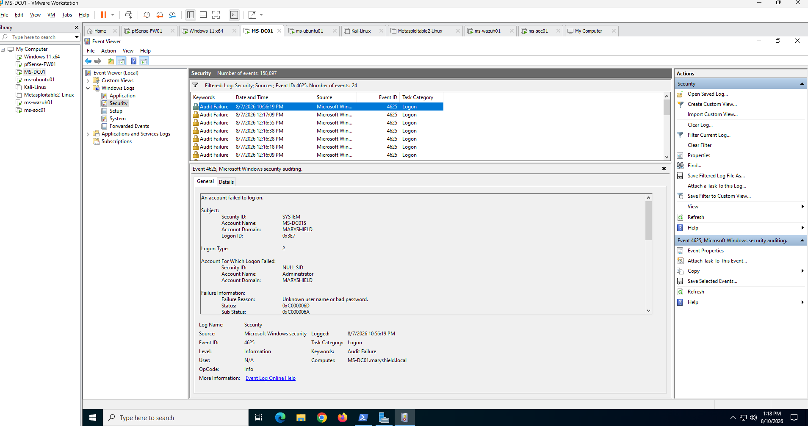
Successful Logon Analysis — Event ID 4624
Windows Security Event ID 4624 records successful logon activity and provides context for determining whether access followed suspicious failed authentication attempts.
Account and Privileged Group Change Investigation
Account-management and group-membership events were reviewed to identify potentially unauthorized administrative changes.
Investigation Areas
- New user account creation
- Account deletion
- Password reset activity
- Account enable or disable events
- Privileged group membership changes
- Domain Admins membership
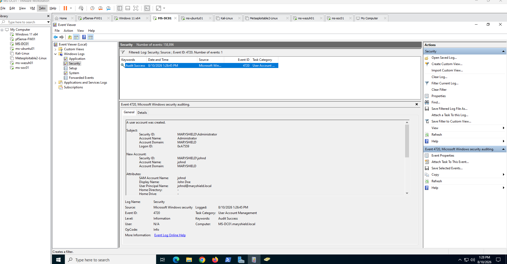
PowerShell Activity Detection
PowerShell telemetry was reviewed because administrative and malicious activities may both rely on PowerShell execution.
Detection Sources
- Windows PowerShell Event Logs
- Sysmon Process Creation
- Command-line logging
- Splunk searches
- Wazuh endpoint events
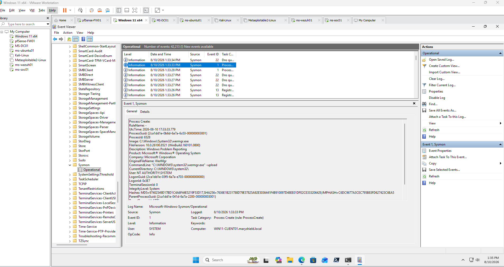
Splunk Detection and Correlation
Splunk Enterprise was used to search Windows Security Events, correlate authentication activity, and build an event timeline.
Example SPL Searches
index=* EventCode=4625
index=* EventCode=4624
index=* host=MS-DC01
| sort _time
index=* sourcetype="XmlWinEventLog:Microsoft-Windows-Sysmon/Operational"
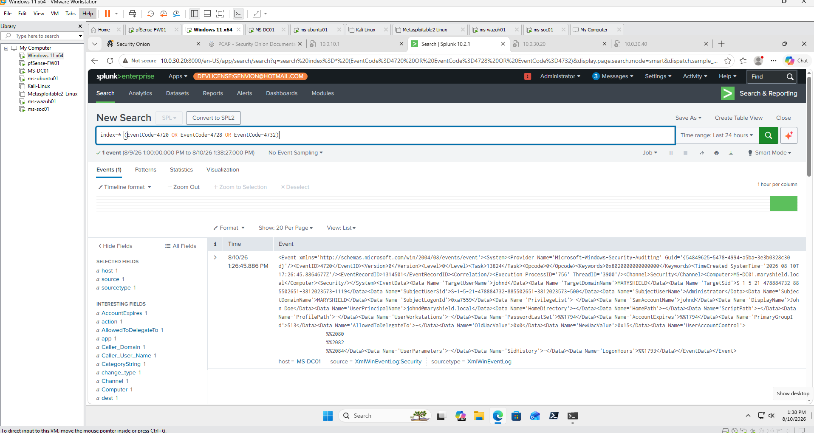
Wazuh XDR Investigation
Wazuh XDR provided endpoint-security context for authentication activity, system changes, account events, and other suspicious behavior.
Investigation Areas
- Windows Security Events
- Agent activity
- Rule severity
- MITRE ATT&CK mapping
- File Integrity Monitoring
- System inventory
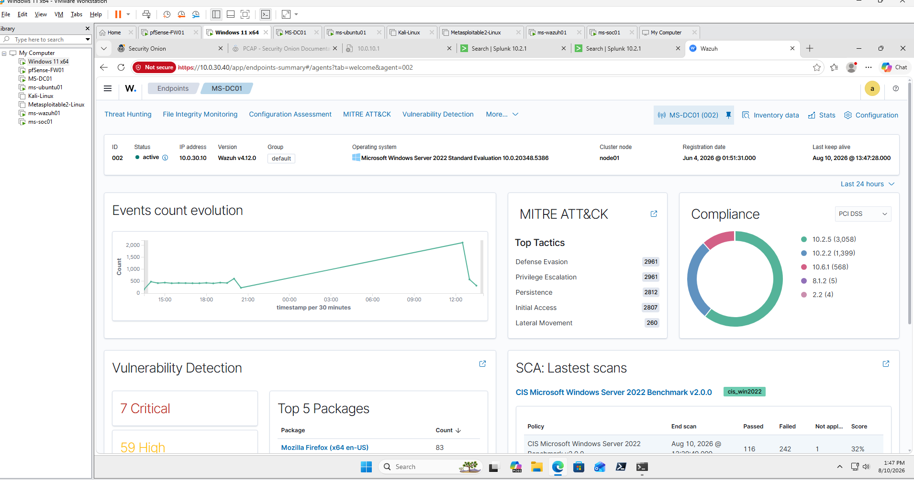
Security Onion Network Investigation
Security Onion was used to review network communications associated with Active Directory authentication and administrative activity.
Relevant Protocols
- Kerberos
- LDAP
- DNS
- SMB
- RPC
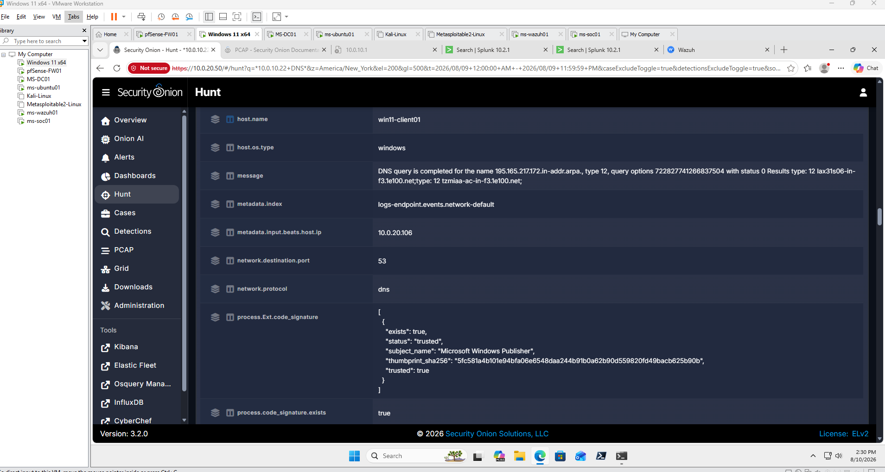
Cross-Platform SOC Investigation
Evidence from Splunk, Wazuh, Security Onion, Windows Event Logs, and pfSense was correlated to establish the source, target, account, timeline, and potential impact of the observed activity.
Identity
Which user or service account was involved?
Source
Which endpoint or IP address initiated the activity?
Target
Which domain controller, workstation, or service was affected?
Timeline
When did the suspicious activity begin and end?
Behavior
Was the activity consistent with expected administrative behavior?
Scope
Did the activity affect one account or multiple systems?
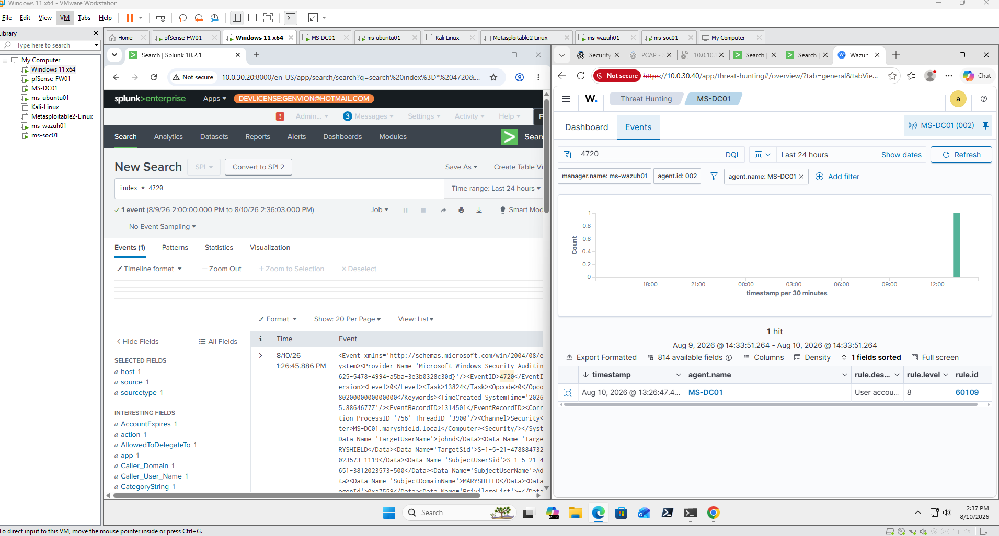
MITRE ATT&CK Mapping
Observed behavior was mapped to relevant MITRE ATT&CK tactics and techniques when supported by the collected evidence.
Credential Access
Authentication activity may indicate attempts to access or misuse enterprise credentials.
Discovery
Account, domain, or service discovery may provide context for suspicious behavior.
Privilege Escalation
Unexpected privileged-group changes may indicate elevated access.
Execution
Suspicious PowerShell or process activity may indicate execution-related behavior.
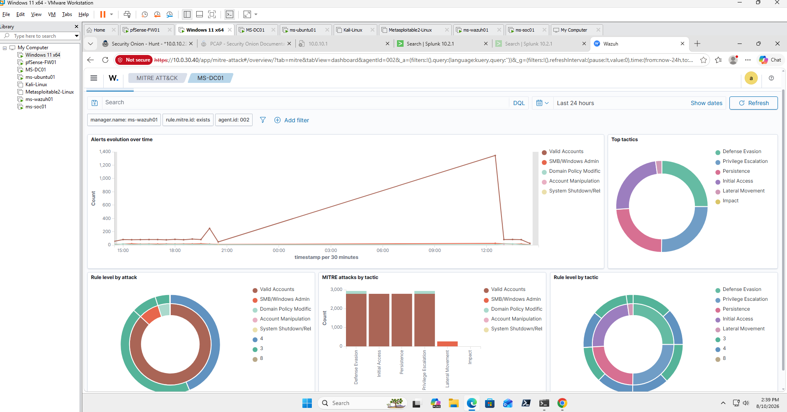
Incident Timeline
Authentication, endpoint, and network evidence was organized chronologically to reconstruct the activity.
| Stage | Activity | Evidence Source |
|---|---|---|
| 1 | Normal authentication baseline | Windows / Splunk |
| 2 | Failed authentication event | Event ID 4625 |
| 3 | Successful or related authentication activity | Event ID 4624 |
| 4 | Account or group modification | Windows Security Logs |
| 5 | Endpoint activity reviewed | Wazuh / Sysmon |
| 6 | Network telemetry correlated | Security Onion |
| 7 | Events correlated and documented | Splunk / SOC Analysis |
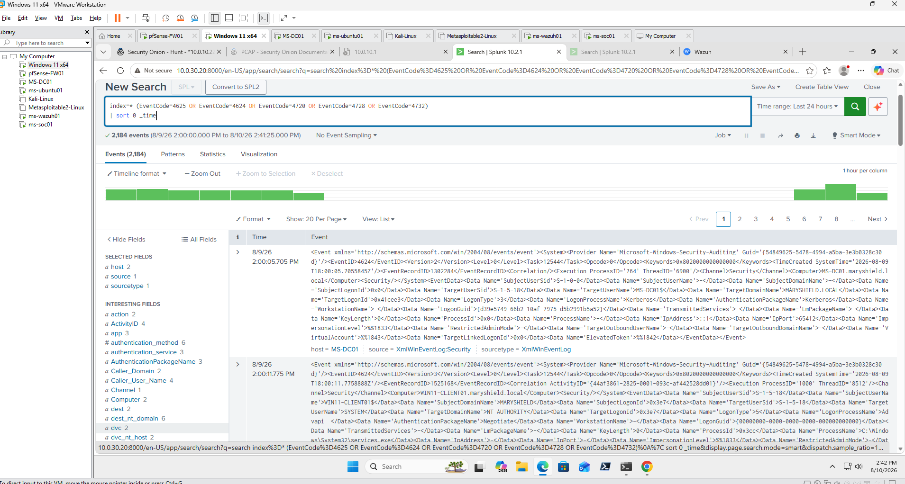
Detection Engineering
Detection logic was developed to identify unusual Active Directory activity while accounting for legitimate administrative behavior.
Detection Areas
- Repeated failed logons
- Successful logon following multiple failures
- Unexpected privileged-group membership changes
- New account creation
- PowerShell execution
- Unusual authentication source systems
- Events occurring outside expected administrative patterns
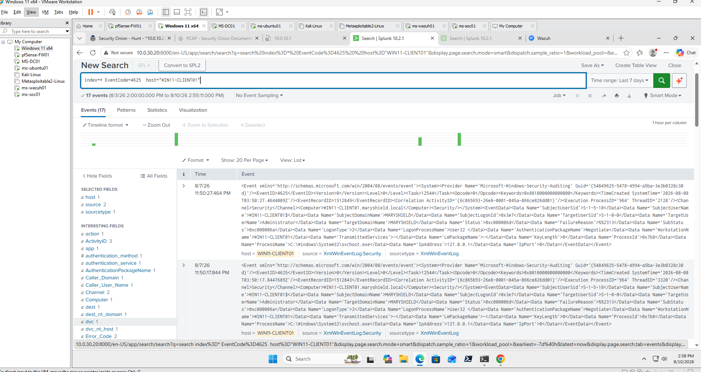
Active Directory Hardening and Mitigation
The investigation identified defensive controls that can reduce the risk associated with unauthorized account access, credential abuse, and privilege escalation.
- Enforce strong password policies.
- Apply account lockout controls.
- Use least-privilege access.
- Limit membership in privileged groups.
- Audit Domain Admins regularly.
- Use managed service accounts where appropriate.
- Monitor account creation and deletion.
- Enable detailed Windows auditing.
- Monitor PowerShell activity.
- Centralize authentication logs.
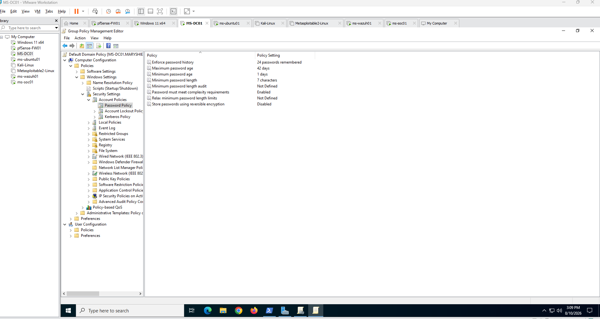
Lessons Learned
This project strengthened my understanding of Active Directory security monitoring, authentication-event analysis, account-management detection, and cross-platform SOC investigation.
- Improved Windows Security Event analysis skills.
- Strengthened understanding of Events 4624 and 4625.
- Improved Active Directory account-change investigation skills.
- Developed additional experience analyzing PowerShell activity.
- Improved Splunk correlation and timeline analysis.
- Strengthened Wazuh endpoint-investigation experience.
- Improved Security Onion network-analysis skills.
- Expanded MITRE ATT&CK mapping experience.
- Improved false-positive analysis and detection tuning.
- Reinforced Active Directory hardening principles.
Skills Demonstrated
Active Directory Security
Investigated authentication, account, and privileged-group activity.
Windows Event Analysis
Analyzed successful and failed authentication events and administrative changes.
Splunk Enterprise
Used SPL to search, correlate, and reconstruct security activity.
Wazuh XDR
Investigated endpoint activity and security alerts.
Security Onion
Reviewed Kerberos, LDAP, SMB, DNS, and other network telemetry.
Sysmon
Analyzed detailed endpoint process and execution telemetry.
MITRE ATT&CK
Mapped observed behavior to standardized attacker tactics and techniques.
Detection Engineering
Developed detection logic and evaluated false-positive considerations.
Final Active Directory Investigation Report
The final investigation report summarizes the authentication activity, evidence collected, affected systems, security tools used, MITRE ATT&CK mapping, detection findings, and recommended Active Directory hardening measures.
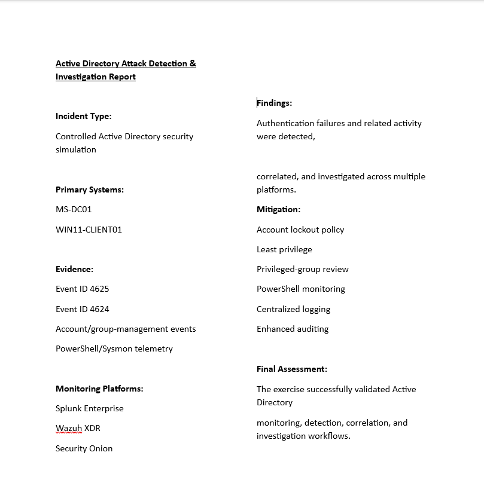
Related Projects
Explore related MaryShield Cyber Lab projects that support Active Directory security and enterprise SOC operations.
Active Directory
Enterprise identity, Kerberos authentication, DNS, Group Policy, and account administration.
View ProjectKerberoasting Detection
Specialized Kerberos credential-access detection and investigation case study.
View ProjectSplunk Enterprise
Centralized Windows logging, dashboards, alerts, and threat detection.
View ProjectIncident Response
Detection, triage, containment, eradication, recovery, and reporting.
View Project